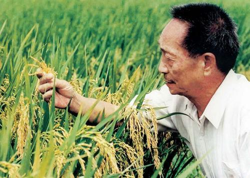

杂交水稻的基本思想和技术，以及首次成功的实现是由美国人Henry Beache在1963年于印度尼西亚完成的，Henry Beache也被学术界某些人称为杂交水稻之父，并由此获得1996年的世界粮食奖。由于Henry Beache的设想和方案存在着某些缺陷，无法进行大规模的推广。
后来日本人提出了三系选育法来培育杂交水稻，提出可以寻找合适的野生的雄性不育株来作为培育杂交水稻的基础。虽然经过多年努力日本人找到了野生的雄性不育株，但是效果不是很好；另外日本人还提出了一系列的水稻育种新方法，比如赶粉等，但是最后由于种种原因没法完成杂交水稻的产业化。

1960年袁隆平从一些学报上获悉杂交高粱、杂交玉米、无籽西瓜等,都已广泛应用于国内外生产中.这使袁隆平认识到：遗传学家孟德尔、摩尔根及其追随者们提出的基因分离、自由组合和连锁互换等规律对作物育种有着非常重要的意义.于是,袁隆平跳出了无性杂交学说圈,开始进行水稻的有性杂交试验.
1960年7月,他在早稻常规品种试验田里,发现了一株与众不同的水稻植株.第二年春天,他把这株变异株的种子播到试验田里,结果证明了上年发现的那个“鹤立鸡群”的稻株,是地地道道的“天然杂交稻”.他想：既然自然界客观存在着“天然杂交稻”,只要我们能探索其中的规律与奥秘,就一定可以按照我们的要求,培育出人工杂交稻来,从而利用其杂交优势,提高水稻的产量.这样,袁隆平从实践及推理中突破了水稻为自花传粉植物而无杂种优势的传统观念的束缚.于是,袁隆平立即把精力转到培育人工杂交水稻这一崭新课题上来.
1973年，以他为首的科技攻关组完成了三系配套并成功培育杂交水稻，实现了杂交水稻的历史性突破。1984年6月成立了全国性的杂交水稻专门研究机构－－湖南杂交水稻研究中心，后又成立国家杂交水稻工程技术研究中心，均由袁隆平任中心主任 [1] 。1986年提出“两系法亚种间杂种优势利用”的发展观点，经6年艰难攻关，与研究人员成功地突破了两系杂交稻关键技术并推广应用，取得了良好的增产效果。1997年提出“杂交水稻超高产育种”的技术路线，在国际上引起高度重视。
在他的率领下，先后于2000年、2004年和2011年实现了超级稻亩产700公斤、800公斤和900公斤的第一期、第二期、第三期目标，亩产1000公斤的第四期目标也于2014年10月实现历史性突破，为进一步大面积、大幅度提高水稻产量奠定了基础。